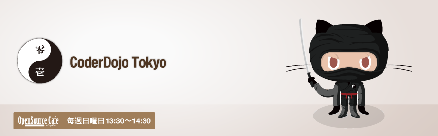

小中学生のためのプログラミング道場。
CoderDojo Tokyoでは、毎週日曜日、ボランティアによるプログラミング道場を開催しています。
など。その他、参加者の希望に応じます。
メンター(先生)は、プログラマやデザイナ、エンジニアなど、ソフトやハードを作ることを専門にしている人たちです。こどものコンピュータ教育に携わる方、会場のOSSCafeの常連ボランティアさん他。詳しくは、CoderDojo Tokyoのサイトへ!
下北沢オープンソースCafeには、他にもいろんなプロジェクトがあります。覗いてみて下さいね :-)